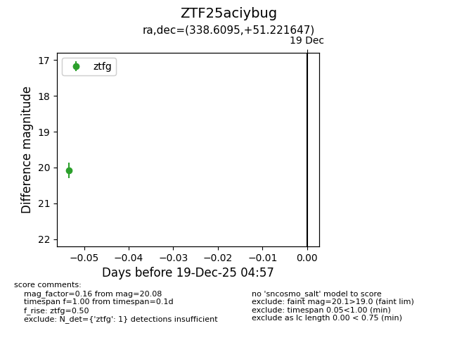
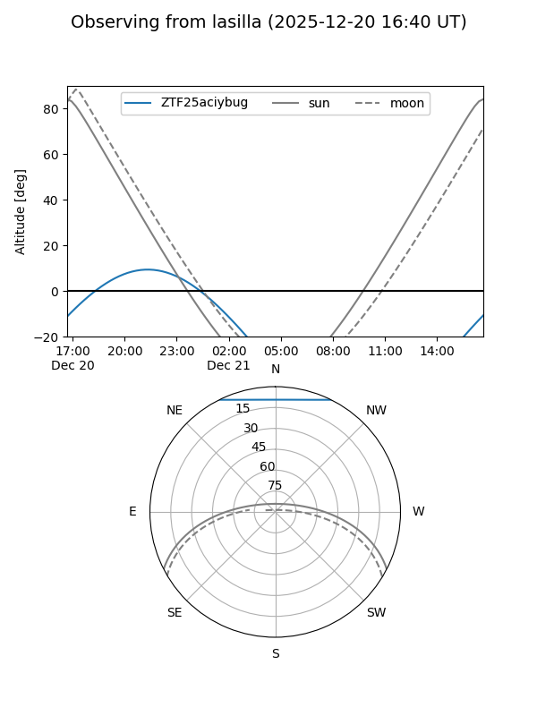

ZTF25aciybug
Target ZTF25aciybug at 2025-12-31 16:59
Aliases and brokers:
FINK:
Lasair:
ALeRCE:
alt names
ZTF25aciybug (ztf,fink_ztf)
Coordinates:
equatorial (ra, dec) = 338.6095,+51.22165
equatorial (HMS+DMS) = 22:34:26.29,+51:13:17.93
galactic (l, b) = (102.1716,-6.04298)
Flags:
Photometry:
last ztfg=20.08
1 ztfg detections
Lightcurve

Visibility


Additional plots